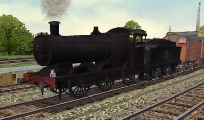

BR ex-GWR 2251 Class 0-6-0 No.3211
BR ex-GWR 2251 Class 0-6-0 Locomotive No.3211

http://www.trainsimfiles.com/
Model Details
Locomotive Details:
Ex-GWR Class 2251 No. 3211
Operating Company: British Railways
Livery/Style period:1950's black (freight)
Version history:
Version: 1.1
Released: 5th June
2002
Updated with correct distance between tender and locoIncludes 3000G tender with installationWeathered bitmaps for both loco and tender
Version: 1.0 beta
Released: 18th April
2002 - Beta Release
Designed by: Tim
Booth ©2002
email: tim@trainsimfiles.com
NOTE: This beta model still uses
the default sounds and cab panel for the time being,
however authentic sounds
and cab view will be released as I can make them
available.
Installation
Before installing any
models, its advisable to backup \TRAINS\TRAINSET directory.
I cannot be held
responsible for any problems caused by the installation of this
model.
To install: Open the zip
file br_exgw_2251_3211.zip, and extract all the
files from the zip into the train simulator directory
(ie. not the trains/trainset directory), it will create
all the necessary
directories and files required.
A demo consist file of the loco is included and installed for viewing the loco only.
Select BR exGW 2251 No 3211 from the available locomotive list. To create
your own consists using this locomotive,
use the Consist Editor included within the
Activity Editor.
This model may or may not be compatible with all the
rolling stock that you have installed, due to coupling and brake system differences.
DO NOT rename the created
directory as this will prevent consists and activities from working correctly.
DO NOT delete the model files/directory once installed,unless
you also ensure you remove any consist files and activities related to the
model.
Copyright
This model is for your personal use only, and
may not be sold or distributed in any way - if you wish to make a compilation CD (for distribution) featuring this model please contact me.
Support
I am happy to help with any problems you may
have with this model, or any model/texture changes you would like to discuss. Please contact me if renumbering is required.
Tim Booth tim@trainsimfiles.com